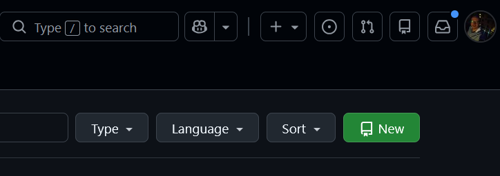
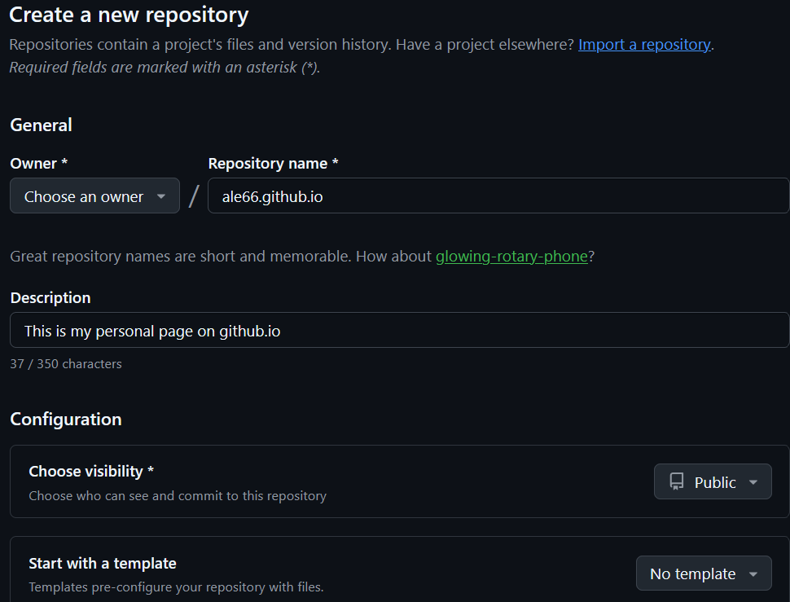
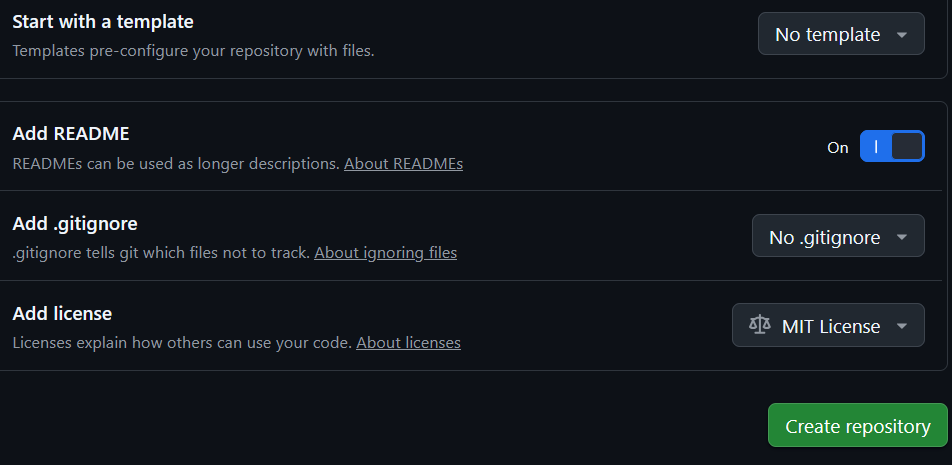

flowchart LR A[edit] --> B[commit] B --> C[GH builds the site] C --> D[GH publish on github.io]
A long-term personal page, public, at
https://<user-name>.github.io
GitHub can serve the files of a repository as a web site
There are two kinds of site:
user site: the repo is called <user-name>.github.io –> https://<user-name>.github.io
project site: any other repo, e.g., my-repo –> https://<user-name>.github.io/my-repo
Today: the user site. The name of the repository is the magic word.
Compare
source: github.com/ale66/ale66.github.io, and
rendering: ale66.github.io
sign in, go to your GH profile
create the repository, add a minimal web page
publish the repo, check it on github.io
from your computer, git clone and start work
sign in to github.com and click New repository
Repository name: exactly <user-name>.github.io
choose Public
tick Add a README file
click Create repository
Careful: your exact user name + .github.io
ale66 –> ale66.github.io



readme.mdon the repo –> index.html on github.io
Automated processing, html injection and publication
some delays in deployment to be expected
index.html is not easily accessible
Edit readme.md for Github.com access
In the new repository: Add file –> Create new file
name it index.html
copy/paste the page structure from an existing page,
or create one on your computer by editing a MD page then running pandoc
A placeholder for the page:
then Commit changes
index.html?by default, any server delivers index.html
https://<user-name>.github.io –> index.html
https://<user-name>.github.io/about.html –> about.html
A subfolder can also have its landing page (index.html)
Settings –> Pages
main, folder / (root)Several Git Pages options are available from docs.github.com/en/pages
open the Actions tab: a job called pages build and deployment runs
wait for the green tick (a minute or two)
go to https://<user-name>.github.io
flowchart LR A[edit] --> B[commit] B --> C[GH builds the site] C --> D[GH publish on github.io]
Every commit on the mainbranch repeats the cycle.
Quick fixes, no installation.
Clone the repo to your computer and work as usual
Open the folder in VS Code, edit, save. Then publish the changes:
<user-name>.github.io/
├── index.html
├── about.html
├── style.css
└── imgs/
└── me.pnglinks use relative paths:
<a href="about.html">About</a><link rel="stylesheet" href="style.css">404: page not found
index.html (nor index.md) in the root folderimages are missing: Me.png vs. me.png
a red cross in the Actions tab: open it and read the message
All-or-nothing: public is universal
private repos can have collaborators
no phone number, home address, ID documents, passwords…
no pictures of other people without their consent
the version history is public too: deleted files are still visible in earlier commits.
a repository called <user-name>.github.io is published as the web site https://<user-name>.github.io
the repository must be public
readme.md (or index.html) is the front door
edit from the browser, or clone and use VS Code with git add, git commit, git push
commits are online within minutes
see docs.github.com/en/pages/quickstart for a walkthough of the method
what must the repository be called, and why?
what is index.html for?
what happens when you commit a change to main?
where do you look when your page shows a 404?
when is public too public?
Any other repository can be published too, as a project site
https://<user-name>.github.io/my-repo
Same recipe: Settings –> Pages –> main
Your user site can link to all of them.
keep your GH profile in good standing
come up with a long-term personal page in <user-name>.github.io/
[migrate the MA COM refactoring into a personal project, not <user-name>.github.io/]
work on your exam project in a dedicated new repo with a name pertinent to the project, e.g.
curated news about Italian politics and dissent: <user-name>.github.io/spazio20/
the launch of Via Passione, a new Milan-inspired perfume: <user-name>.github.io/via-passione/
refactoring of campari.com: <user-name>.github.io/campari-new/
Tourist resources for Andorra: <user-name>.github.io/visit-andorra/
your friend Anna is running for mayor of Lodi, IT: <user-name>.github.io/anna-4-lodi/